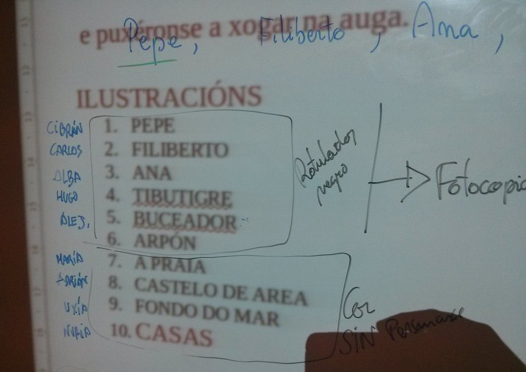

Ilustraciones del texto colectivo
ACTIVIDAD: Ilustraciones del texto colectivo
- Duración:
- 60:00
- Agrupamento:
- Gran grupo
A continuación, el alumnado creará las ilustraciones para el texto colectivo. La ilustración debe tratarse con la misma importancia que la producción textual y debe aportar información complementaria al texto.
- Instrucciones
-
En gran grupo repartimos los diferentes elementos a ilustrar intentando que todo el alumnado tenga una tarea asignada:
-
- Portada: ¿Qué datos debe contener? Como mínimo: título, persona escritora y persona ilustradora (de ser la misma aparecerá una sola vez)
- Contraportada
- Personaje principal
- Personajes secundarios
- Escenarios que se repiten
- Escenarios que aparecen una única vez
. Proceso de ilustración (CC BY-SA) -
- Técnicas
-
Es importante buscar técnicas que se adapten a las posibilidades del grupo (fotografía, dibujo sobre fondos variados, frotado con ceras blandas, collage, etc.) para que el producto final sea de la mayor calidad posible. La decisión acerca de la técnica empleada para realizar la ilustración puede ser negociada pero habrá que llegar a acuerdos acerca de quién dibuja al personaje principal (tiene que mantenerse estable a lo largo de la historia), los secundarios (ídem), los espacios en los que se repitan escenas,... Se pueden escanear o fotocopiar los personajes que aparecen en más de una secuencia para asegurar que son invariables.
Obra publicada con Licencia Creative Commons Reconocimiento Compartir igual 4.0